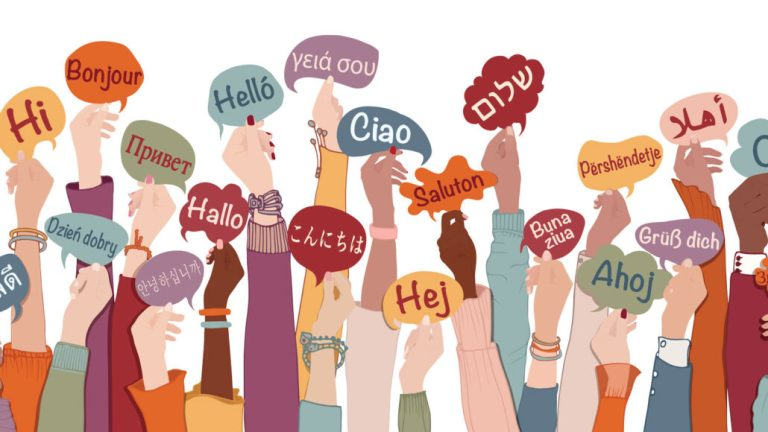
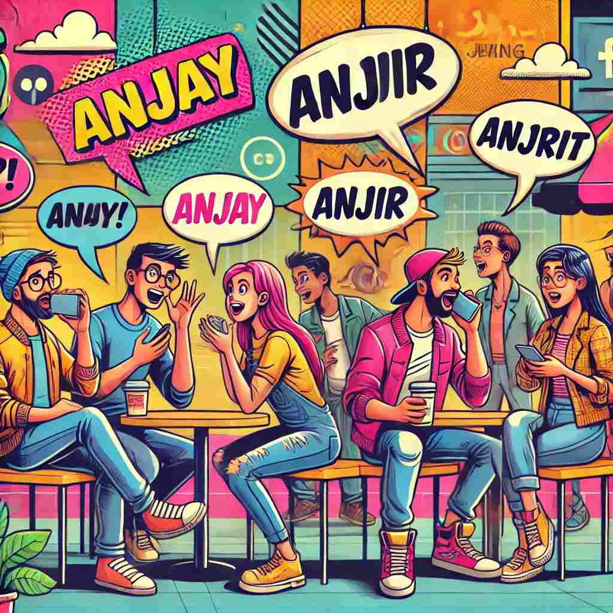

Pernah gak sih kalian menyadari bahwa kata-kata paling kasar dalam kamusmu justru keluar di saat-saat paling jujur? Entah itu saat kita merasa hancur karena kecewa, melompat kegirangan karena euforia, atau sekadar kaget karena hal sepele. Tanpa diundang, kata-kata seperti anjay, anjir, atau babi meluncur begitu saja. Anehnya, ada rasa lega yang tersalurkan, sebuah sensasi puas yang tak bisa digantikan oleh kata-kata santun mana pun. Fenomena ini membuatku bertanya-tanya: Apakah ini hanya sekadar kebiasaan buruk, atau ada sesuatu yang lebih dalam di balik 'pedasnya' lidah kita?
Kalau di perhatikan, ini bukan hanya terjadi pada pribadi kita. Di lingkaran pertemanan contohnya, kata-kata kasar justru sering menjadi bagian dari percakapan sehari-hari. Misalnya, ketika mendengar sesuatu yang mengejutkan, spontan muncul kalimat “anjir, serius kejadiannya kayak gitu?” atau "Sialann!”. Reaksi itu tidak sekadar kata, tapi juga ekspresi yang mempertegas emosi. Dan seringnya, teman-teman yang mendengan umpatan seperti itu tidak merasa tersinggung. Malah, terkadang hal itu mempererat rasa kebersamaan seolah kata kasar menjadi bumbu yang membuat pertemanan terasa lebih cair dan asik, walaupun ini tidak bisa di normalisasikan begitu saja.
Dan jika kalian pun sadar, bahwa kata-kata kasar itu sering sekali berganti mengikuti alur tren. Ada masanya orang lebih sering mengucapkan kata bernuansa binatang, lalu bergeser ke slang lokal, dan belakangan ini muncul adopsi dari bahasa asing atau istilah internet. Pola ini membuatku berpikir bahwa bahasa kasar bukan hanya alat ekspresi pribadi, melainkan juga dipengaruhi oleh arus budaya yang bergerak dimasyarakat. Seolah kata-kata kasar pun punya “musimnya” sendiri.
Lalu, kenapa kata-kata kasar terasa candu?
Jika kita melihat dari sudut pandang psikologis, sebagaimana dijelaskan oleh Vingerhoets, mengumpat dapat dipahami sebagai bentuk pelepasan emosi (catharsis). Ketika emosi memuncak baik karena marah, terkejut, frustrasi, bahkan dalam kondisi senang yang intens kata-kata kasar muncul bukan sekadar sebagai pilihan bahasa, melainkan sebagai respons emosional yang relatif spontan. Dalam proses ini, otak menilai situasi sebagai sesuatu yang menekan atau menggugah emosi, lalu memicu respons fisiologis berupa pelepasan adrenalin (hormon siaga pemicu energi dan kewaspadaan) dan endorfin (hormon bahagia pereda nyeri dan stres). Respons ini membantu meredakan ketegangan internal, sehingga setelah mengumpat seseorang sering merasakan kelegaan psikologis. Pengalaman itu juga aku rasakan secara personal: setiap kali mengumpat, ada sensasi lega dan puas yang sulit digantikan oleh kata-kata netral, seolah emosi yang menumpuk menemukan salurannya sendiri melalui bahasa.
Kemudian dari sisi linguistik kita bisa melihat alasan yang lebih jelas. Kata-kata kasar umumnya pendek, keras, dan dipenuhi konsonan letup seperti b, j, k, atau t. Secara fonetik, bunyi-bunyi ini terasa “meledak” di mulut, seolah lidah ikut meluapkan emosi yang menekan dada. Karena itu, saat emosi memuncak, kata kasar sering kali meluncur lebih cepat dibanding kalimat santun yang panjang dan tertata. Ini di jelaskan dalam Penelitian linguistik terbaru yang menunjukkan bahwa kata-kata kasar memang cenderung minim bunyi lembut seperti l, r, w, atau y, dan justru didominasi konsonan plosif (p, t, dan k) yang menghasilkan ledakan udara ketika diucapkan. Pola ini ditemukan lintas bahasa, dari Inggris hingga Korea dan Rusia bahkan Indonesia. Bunyi yang keras dan singkat membuat kata kasar terasa lebih ekspresif dan efektif sebagai pelepas emosi dibandingkan kata-kata santun yang lebih panjang dan berliku.
Riset Lev-Ari dan McKay (2022), misalnya, menemukan bahwa kata kasar jarang mengandung bunyi approximant (y, w, l, & r) dan lebih sering mengandalkan plosif. Bahkan dalam eksperimen lintas budaya, penutur dari berbagai bahasa cenderung menilai kata dengan bunyi plosif sebagai “lebih mungkin” merupakan kata kasar. Temuan ini di perkuat oleh studi lain yang menunjukkan bahwa ketika kata kasar “dilunakkan” menjadi minced oaths seperti darn (dari "damn") atau frigging (dari "fucking"), bunyi lembut sengaja ditambahkan agar daya ledaknya berkurang. Minced oaths ini juga terjadi dalam budaya bahasa Indonesia yang di mana serupa dengan kata anjir, bjir, atau anjay, yang dimana itu adalah hasil dari pelunakan dari kata "anjing" yang dianggap terlalu kasar untuk diucapkan, sehingga dilakukannya pelunakan atau pelesetan dengan penambahan bunyi approximant agar dapat sedikit lebih lembut di telinga.
Dari sisi sosial, kata kasar tidak selalu hadir sebagai simbol pelepasan emosional semata. Dalam banyak kelompok pertemanan bisa kita lihat, umpatan justru berfungsi sebagai tanda keakraban. Kata-kata yang secara umum dianggap tabu dipakai sebagai “bahasa dalam” yang hanya dipahami oleh anggota kelompok. Jika seseorang tidak bisa menerima gaya bahasa ini, ia kerap dicap “kurang asik” atau tidak menyatu dengan lingkungan tersebut.
Fenomena ini dijelaskan melalui Neutralization Theory oleh Sykes dan Matza. Penggunaan kata kasar dipandang sebagai mekanisme individu untuk menetralkan norma kesantunan masyarakat demi mencapai tujuan yang dianggap lebih bernilai. Melalui teknik Appeal to Higher Loyalties, anggota kelompok menempatkan loyalitas terhadap persahabatan dan 'kejujuran' ekspresi di atas etiket formal.
Di sini, umpatan berfungsi sebagai alat penetral: muncul keyakinan bahwa perilaku tersebut tidaklah salah selama dilakukan dalam ruang intim yang tidak merugikan siapapun (denial of injury). Hal ini menciptakan inklusivitas eksklusif; lambaian kata kasar menjadi simbol bahwa ikatan kelompok jauh lebih kuat daripada tekanan norma eksternal.
Tetapi perlu diperhatikan juga bahwasanya Neutralization Theory ini bekerja optimal jika posisi antar anggota kelompok setara. Jika ada perbedaan hierarki (misal atasan ke bawahan), penggunaan kata kasar tidak lagi menjadi "netralisasi" tapi berubah menjadi penindasan atau perundungan (bullying).
Dengan demikian, ketika kata kasar digunakan dengan setara dan tanpa menimbulkan ketersinggungan, hal itu menjadi bukti bahwa kelompok telah mencapai frekuensi emosional yang sama. Praktik kolektif melanggar tabu ini mengubah larangan sosial menjadi bahasa internal, sebuah manifestasi dari breaking taboos to build solidarity.
Tanggapan lain juga di ajukan dalam penelitian Daly dkk. (2004) menyebut praktik ini sebagai ritual abuse. Dalam konteks ini, Daly dapat menyebut praktik umpatan akrab ini sebagai ritual abuse, karena secara bahasa ia tetap merupakan serangan verbal, tetapi secara sosial berfungsi sebagai ritual yang menegaskan kedekatan. Istilah ini menyoroti paradoks bahwa kekasaran dapat mempererat hubungan jika dilakukan berulang, disepakati, dan dipahami bersama. Namun, karena selalu membawa risiko melukai, praktik ini dapat dengan mudah bergeser dari simbol keakraban menjadi bentuk dominasi atau relasi toxic jika tidak ada kesetaraan dan persetujuan emosional. Dengan kata lain kata kasar tersebut tidak berubah secara makna, yang berubah adalah bagiamana seuatu kelompok atau individu tersebut memaknai ungkapan tersebut.
Bagaimana arus zaman membuat umpatan menjadi tren dan indentitas individu modern?
Setelah menelusuri penyebabnya dari lapisan paling personal hingga lingkar pertemanan, kini pembahasan ini kita tarik ke ranah yang lebih makro. Pada titik ini, umpatan tak lagi semata-mata persoalan individu atau kelompok kecil, melainkan gejala budaya. Ia hidup di dalam ekosistem bahasa yang terus bergerak mengikuti arus zaman tanpa henti, tanpa pusat kendali tunggal.
Bahasa, pada hakikatnya, bukan benda mati. Ia adalah organisme hidup yang tumbuh, beradaptasi, dan bereaksi terhadap perubahan sosial. Maka, umpatan pun mengalami hal serupa. Ia memiliki “musim”-nya sendiri: lahir, populer, jenuh, lalu perlahan ditinggalkan atau berevolusi menjadi bentuk baru. Dalam kajian sosiolinguistik, pergeseran ini kerap disebut sebagai linguistic innovation sebuah inovasi bahasa yang muncul sebagai respons atas konteks sosial dan kultural tertentu.
Kita bisa melihat jejaknya dengan jelas. Dahulu, umpatan banyak bersandar pada simbol-simbol yang dekat dengan kehidupan lokal, terutama fauna atau objek sehari-hari. Namun kini, lanskap itu berubah. Kata-kata kasar tidak lagi sepenuhnya berakar pada konteks lokal, melainkan menjelma menjadi istilah hibrida hasil persilangan antara bahasa internet, budaya populer global, dan pengaruh asing.
Hal ini selaras dengan pemikiran Pierre Bourdieu mengenai Social Capital. Menggunakan umpatan yang sedang tren bukan hanya soal marah, melainkan upaya individu untuk menunjukkan bahwa mereka memiliki 'modal sosial' berupa pemahaman terhadap kode budaya terbaru. Dengan mengikuti tren umpatan tertentu, seseorang mengukuhkan identitasnya sebagai bagian dari generasi atau subkultur yang relevan.
Di sini, budaya bertindak sebagai kurator yang menentukan batas tabu mana yang boleh 'dilanggar bersama'. Kata kasar menjadi semacam tanda pengenal (shibboleth) yang memisahkan siapa yang 'masuk' dalam arus modernitas dan siapa yang tertinggal. Oleh karena itu, perubahan kata kasar dari masa ke masa bukan sekadar kebetulan, melainkan manifestasi dari cara masyarakat kita menegosiasikan identitas kolektif mereka di tengah derasnya arus globalisasi.
Kesimpulan
Pada akhirnya, aku memahami bahwa kata kasar terasa 'candu' bukan karena satu alasan tunggal, melainkan hasil kerja sama berbagai faktor yang kompleks.
- Secara psikologis, ia adalah katup pelepas emosi yang instan.
- secara linguistik, ia memiliki struktur bunyi yang memuaskan untuk diucapkan.
- Secara sosial, ia adalah perekat identitas kelompok
- dan secara budaya, ia adalah tiket untuk tetap relevan dengan zaman.
Namun, jangan lupa bahwa fungsi 'netralisasi' ini hanya bekerja dalam ruang yang penuh kesepakatan. Tanpa kecerdasan untuk tahu kapan harus menahan diri, kata-kata itu akan kembali ke fungsi asalnya: senjata yang melukai. Jadi, tantangannya bukan tentang berhenti bicara kasar, tapi tentang memiliki kedewasaan untuk tahu di mana pedang itu harus disarungkan, dan di mana ia boleh digunakan untuk merayakan keakraban.